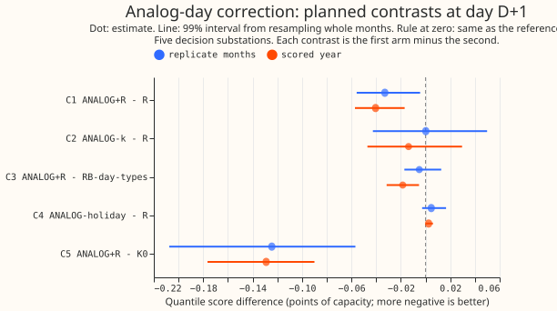
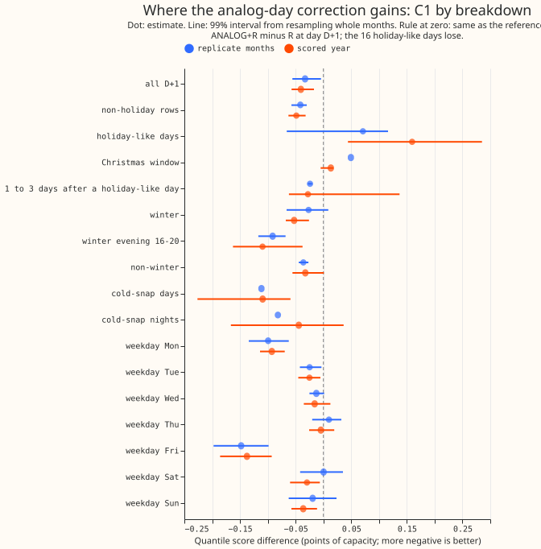
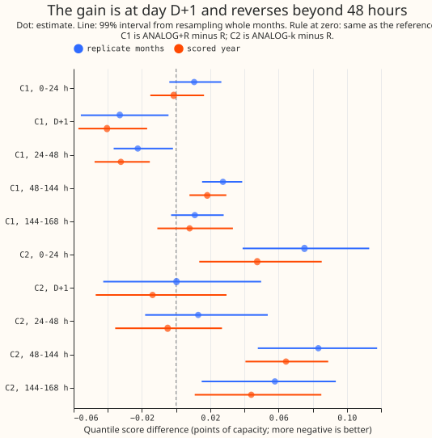
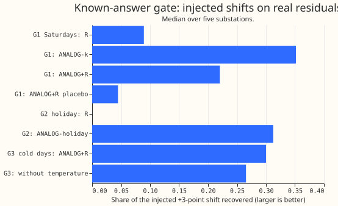

Differentiable physics: correcting GAM-K with the errors of the most similar past days
Take-home: averaging the errors of the 20 most similar past days gave a small, real gain over
recipe R at day D+1 (0.041 points, about 1.7% of recipe R's score of 2.436), and the part of the
idea that was about
weather and holidays did not help. Recipe R is the baseline correction: it subtracts 0.75 times
the mean of the last 14 days' errors by half-hour from the forecast of GAM-K, the physics-based
demand model (a generalised additive model with a Kalman filter that updates it using ensemble
weather forecasts from the European Centre for Medium-Range Weather Forecasts, ECMWF). One point is
1% of a substation's
capacity, and lower scores are better. The gain comes from using many same-day-type days over a
13-week season window, including last year's days. Ranking days by forecast temperature helped by
only 0.005 points. Using the same holiday of the year before made holidays worse. The verdict is
small gain, not a stronger one. The 99% interval for the difference from R lies wholly below zero,
but the upper end of that interval (-0.017) is above the -0.02 threshold written into the plan
before any fit.
What was asked, and the answer in plain terms
The question was whether the day-ahead correction should average the errors of the past days that look most like the day being forecast, instead of the most recent days. The quantity forecast is the electricity demand at five Primary substations (the stations that step power down from 33 kV to 11 kV). Each forecast covers day D+1, the calendar day after the 09:00 UTC forecast origin, which is 15.5 to 39 hours ahead. Experiment 115 found recipe R, and experiment 134 found that a weekday term added only 0.011 points. This experiment looked for the most similar past days instead: same day type (Monday, Tuesday to Thursday, Friday, Saturday, Sunday), within a season window of the same date, and closest in forecast daily mean temperature, with the same holiday for holidays. It is a nearest-neighbour ("analog") correction as in Delle Monache et al. (2013), applied to forecast errors.
Answer. The best arm, ANALOG+R, scored 2.395 points at day D+1 in the scored year (2 July 2025 to 29 June 2026, 292 daily forecast runs) against 2.436 for R. Rows inside the hand-filtered switching events are left out. The settings were chosen on the odd months of July 2024 to June 2025; the even months are the replicate months.
Figures




Results
- Arms and settings. Kappa is the fraction of the mean error subtracted, k is the number of similar days averaged, the season window is the number of weeks either side of the date from which days are drawn, and lambda is the weight of the analog profile against R's 14-day profile. K0 (GAM-K); R (recipe R, kappa 0.75); ANALOG-k (kappa 0.75, k 20 days, 8 weeks); ANALOG+R (kappa 1.0, k 20, 13 weeks, lambda 0.5, the weight of the analog profile against R's profile); ANALOG-holiday (R, with the analog profile at weight 0.5 on holiday-like days only; fixed settings); ANALOG+R-notemp (no temperature ranking; k 20, 8 weeks); ANALOG+R-recent (post hoc: ANALOG+R without days older than 300 days). Settings are fleet-wide, chosen by the tuning rows' mean absolute error of the median at D+1; k reached its largest value on the grid (20) for all three tuned arms. Tuning rows' error: K0 4.299, R 4.131, ANALOG+R 4.053. No demand model was refitted, so no retraining schedule applies and the contrasts do not depend on a retraining schedule.
- Rows. 66,844 D+1 rows in the scored year and 41,126 in the replicate months at the five decision substations (D5, D10, D11, D14, D16), D9 beside them.
- Absolute scores, scored year, D+1 (all leads). K0 2.524 (2.812), R 2.436 (2.744), RB 2.424 (2.750), RB-day-types 2.414 (2.756), ANALOG-k 2.422 (2.793), ANALOG+R 2.395 (2.750), ANALOG-holiday 2.438 (2.746), ANALOG+R-notemp 2.400 (2.757), ANALOG+R-recent 2.411 (2.760). D9 beside them: R 2.123, ANALOG+R 2.107.
- C1 ANALOG+R minus R (decides the verdict, 99%). Scored year -0.0405 (-0.0572 to -0.0169), 4 of 5 substations; replicate months -0.0330 (-0.0558 to -0.0045), 4 of 5. Winter (November to March) -0.0526 (-0.0676 to -0.0259); leaving out any one substation keeps the estimate between -0.027 and -0.052 with the interval below zero. Over all leads +0.0067 (-0.0048 to +0.0187); at 48 to 144 hours +0.0182 (+0.0079 to +0.0295).
- C2 ANALOG-k minus R. -0.0138 (-0.0471 to +0.0295), 2 of 5; replicate +0.0002. C3 ANALOG+R minus RB-day-types. -0.0185 (-0.0315 to -0.0052), 5 of 5; replicate -0.0051 (-0.0171 to +0.0127). C5 ANALOG+R minus K0. -0.1291 (-0.1765 to -0.0899), 5 of 5.
- Where C1 gains (scored year, D+1). Monday -0.0928 and Friday -0.1375 (both 5 of 5), Saturday -0.0296, Sunday -0.0363, Tuesday -0.0251, Wednesday and Thursday within noise. Winter evening 16:00 to 20:00 -0.1095 (-0.1625 to -0.0375), 4 of 5. Cold-snap days (forecast daily mean under 3 degrees C, 80 site-days) -0.1092 (-0.2264 to -0.0593), 5 of 5 substations; cold-snap nights (22:00 to 06:00, 900 rows) -0.0442 (-0.1664 to +0.0362), 4 of 5, with an interval that includes zero. Against RB-day-types the cold-snap days score -0.0738 (-0.3648 to +0.0501). Non-winter -0.0325 (-0.0557 to +0.0009).
- Temperature. ANALOG+R-notemp minus ANALOG+R is +0.0046 (-0.0012 to +0.0110) in the scored year and +0.0029 in the replicate months: ranking by temperature gains 0.005 points, too little to justify the lookup under the plan's 0.02 rule. The gain is larger where weather matters: winter evenings +0.0174 (-0.0165 to +0.0450) scored and +0.0160 (+0.0076 to +0.0253) replicate, and all leads +0.0066 (+0.0018 to +0.0117) scored. On cold days the chosen analogs differ from the target by 3.0 degrees C on average (site D10), against 1.3 on other days, probably because few cold days exist.
- Last year's days. In the scored year the mean pool of candidates at D10 is 80, of which 51 are from the previous year; in the tuning and replicate months it is 34, of which 8 are. ANALOG+R-recent minus ANALOG+R is +0.0162 (+0.0107 to +0.0224) in the scored year and +0.0016 in the replicate months, which have few days from the previous year (8 on average). About 40% of the gain over R (roughly 26 to 55% from the interval of the difference) therefore comes from last year's days (recent-only minus R: -0.0243, -0.0375 to -0.0072). The tuned settings were chosen on a pool with little previous-year history, so they may under-use last year's days.
- Holidays. C4 (ANALOG-holiday minus R) on holiday-like days is +0.0713 (+0.0192 to +0.1424), 1 of 5 substations better; Christmas window +0.0053; Easter +0.1161 (one set of 720 rows). ANALOG+R minus R on holiday-like days is +0.1595 (+0.0441 to +0.2851). All 16 holiday-like targets of the scored year (D10) used their own holiday's earlier occurrence (identity path); none needed the fallback. One earlier occurrence is a worse correction than R's 14-day profile. Non-holiday rows carry the whole gain (-0.0486, 5 of 5). The days 1 to 3 after a holiday-like day gain -0.0279 (-0.0620 to +0.1369) against R, and -0.0672 (5 of 5) against RB-day-types. About 13 holiday-like days fall on scored runs, so the intervals are coarse. Christmas window (4 substations): C1 +0.0133 (-0.0050 to +0.0181), C3 -0.0647 (-0.0702 to -0.0437), C5 -0.1242 (-0.1442 to -0.0477). Easter: C1 +0.2786, 0 of 5 substations better. Holiday-like days: C2 +0.3747 (+0.2352 to +0.5498). Replicate months, which test the fallback path only because no holiday there has an earlier occurrence: C4 on holiday-like days +0.0663 (-0.1248 to +0.0845), 1 of 5 substations better. Holiday verdict: ANALOG-holiday is not a candidate, because C4 is positive on holiday-like days and in the Christmas window, and only 1 of 5 substations is better.
- Tails (scored year, D+1; coverage gap, observed minus nominal coverage in percentage points, then pinball loss). ANALOG+R: q01 +1.27 (0.1843), q05 +1.65 (0.5910), q95 -0.94 (0.6570), q99 -1.16 (0.2130); R: +1.39 (0.1875), +1.76 (0.6138), -1.01 (0.6573), -1.16 (0.2124). On cold-snap nights (900 rows; nominal levels 0.95 and 0.99, so every arm under-covers) the share of readings at or below q95 is 0.839 for K0, 0.888 for R, and 0.891 for ANALOG+R; below q99 it is 0.953, 0.976, and 0.978. In the replicate months the 468 cold-night rows show 0.998 and 1.000 for R and ANALOG+R, so cold-night coverage differs between periods.
- Not computed. The curtailment-cost metric was not scored, because the experiment changes only the day-ahead mean correction. The q95 and q99 pinball losses barely move (0.6573 to 0.6570 and 0.2124 to 0.2130), and the upper tail is the one that matters for curtailment; q05 improves by 0.023.
- Predictions. Held: P4 (temperature adds 0.00 to +0.02: +0.005), P7 (the gain reverses beyond 48 hours), P8 (tuned k at least 5), and P6's first half (the gain is largest on winter evenings among the season and time-of-day cuts; Friday is larger). Failed: P1 (C1 was -0.041, below the predicted -0.005 to -0.03), P2 (the pure analog arm was not worse than R), P3 (ANALOG+R beat RB-day-types by 0.0185, not within 0.01), P5 (the holiday arm was worse than R, not better, in the Christmas window too, and the interval lay wholly above zero), and P6's second half (the non-winter estimate was -0.033, not within 0.005 of zero).
Gate
The known-answer gates G0, G1, and G2 passed, and they ran on the tuning months before any replicate or scored forecast was read. The recovered shares (the fraction of an injected shift that each arm's correction picks up) agree with the expected values in the plan.
- G0, no lookahead. Injecting +3 points on the target day and on the origin's own day changed no arm's profile at all (largest change 0.0).
- G1, Saturday evenings. Share of the +3-point shift recovered, median of five substations: R 0.089, ANALOG-k 0.352, ANALOG+R 0.220 (twice R is 0.178), the placebo (the day type of 3 days later) 0.045 for ANALOG+R and 0.000 for ANALOG-k. G1b at k 3 and 4 weeks: 0.556 with temperature ranking and 0.590 without.
- G2, a recurring holiday. The Spring Bank Holiday of 26 May 2025 recovered 0.3125 of a shift injected on 27 May 2024 for ANALOG-holiday (the plan's expected value) and 0.000 for R.
- G3, a recurring weather state (informative, did not cap the verdict). On cold days ANALOG+R
recovered 0.300 and ANALOG+R-notemp 0.265. The difference, 0.035, is below the 0.05 the plan asked
for. Together with the null result for temperature above, the temperature part of the hypothesis
is untested in the gate and only weakly supported in the scores. The verdict for that part is
inconclusive, notrefuted.
Checks
- Median forecast minus mean forecast per site (scored year, D+1, points). ANALOG+R: D10 +0.011, D11 -0.018, D14 +0.007, D16 -0.021, D5 -0.060. R: +0.009, -0.019, +0.002, -0.015, -0.037. K0 at D5 is -0.097.
- Error of the median and of the mean forecast beside each contrast (scored year, D+1). C1: -0.0675 and -0.0689. C2: -0.0109 and -0.0128. C3: -0.0320 and -0.0323. C4: +0.0036 and +0.0038. C5: -0.2447 and -0.2482. The quantile score and both errors point the same way.
- Triggers. Four of the plan's seven audit triggers fired, and none led to an audit: the ML manager decided against one to save usage quota (a message to this session on 2026-10-21, not committed). The Opus audit is the step the manager skipped. Trigger 1: G3, a known-answer gate that failed, reported as informative above. Trigger 2: the C1 gain is larger than predicted (P1), the pure analog arm did not lose to R (P2), and ANALOG+R beat RB-day-types by more than predicted (P3); the recent-only ablation explains part of P1 (last year's days carry about 40% of the gain) and nothing explains P2 and P3. Trigger 4: C2 (ANALOG-k minus R, -0.0138) flips sign when D14 is left out (+0.0017); C1, C3, C4, and C5 keep their sign when any one substation is left out. Trigger 5: R, which the holiday arm contains as a special case, beats the holiday arm on holiday-like days (+0.0713); the cause is the one-sample holiday profile. Trigger 3 did not fire. Trigger 6 did not fire: experiment 134's C1 interval is 0.026 wide and this one is 0.040 wide. Trigger 7 did not fire: no later experiment depends on this result yet.
Caveats
- Five substations and one independent winter; about 13 holiday-like days in the scored year.
- k stopped at the largest grid value, so a larger k may do better. The tuning screen used the median's absolute error, 135 settings per arm against one fixed setting of R, and the replicate months (-0.033) guard against that optimism.
- The tuned settings come from a pool with little history from the previous year; the scored year's pool is larger.
- The shift applies at every lead as R does; the gain reverses beyond 48 hours, so a serving version would apply it at day D+1 only.
- ANALOG+R-recent is post hoc and was not re-tuned. Its cap of 300 days leaves out days older than 300 days; with the tuned 13-week window, days 274 to 300 days old are still allowed, so it leaves out most but not all of the previous year.
- The tuned arms' spread is fitted on the tuning rows after the settings were chosen on the same rows, so the spread is slightly too narrow out of sample, and R, which was not tuned, does not have this bias. Quantile-score and tail contrasts against R are therefore slightly biased against the analog arms.
- The gate's shares are fractions of the raw +3-point shift. Removing each day's mean and the kappa shrink put the ceiling near 0.62 at kappa 0.75, and the plan's expected values already include that.
- The report's cold-snap rows use the observed daily mean below 3 degrees C in winter months, while the gate's cold days use the forecast daily mean below 5 degrees C in the tuning months, so they are different sets of days.
What to try next
- Test a day-type profile with k 20 or more and a 13-week season window, applied at day D+1 only, with lambda tuned on the quantile score. The gain over RB-day-types (0.0185) says the larger pool and last year's days matter more than the choice of similarity.
- Leave holiday-like days on R's 14-day profile and test a pooled holiday profile (several holidays of one kind together) instead of one earlier occurrence.
Every number above is printed by ml-experiments/00145-*/e00145_report.py; its output is
report.txt.
Plan, committed before any fit
This experiment asked whether the day-ahead forecast's recent-error correction should average the errors of the most similar past days instead of the most recent days. The forecast is the electricity demand of five Primary substations (the stations that step power down from 33 kV to 11 kV) for the day after the 09:00 UTC forecast origin, from the physics-based demand model with a Kalman filter on ECMWF ensemble weather (GAM-K, arm K0; experiment 111). Recipe R subtracts 0.75 times the mean of the last 14 days' errors by half-hour (experiment 115). A weekday term gave only 0.011 points more (experiment 134). This experiment picks, from all the past days of the same day type within a season window, the ones whose forecast temperature was closest to the target day's, and averages their errors. It is a nearest-neighbour ("analog") correction of the kind forecasters use for load on holidays and extreme weather, as in the analog ensemble of Delle Monache et al. (2013), applied to the error of a forecast and not to the weather. A clean negative result is a fine outcome. Experiment 143 (in progress) tests a different holiday idea (keeping holiday readings out of the Kalman filter's update); the two do not overlap in mechanism.
Read before planning
- Earlier advice followed. Experiment 134's advice is to use day types and not seven weekdays, and to apply the term at D+1 only. This plan uses day types, and applies the analog shift at every lead as recipe R does, so the lead bands show whether the loss beyond 48 hours that experiment 134 found also appears here.
- Experiment 115's KW-pl52 arm (the diurnal shape from 52 weeks earlier) scored -0.034 against K0, against -0.075 for the current shape (KW), so last year's shape gains about half as much as the current one. That means demand errors have a seasonal repeat but the pattern drifts within a year. The season window of this plan therefore starts narrow (2 to 13 weeks either side), and the most-recent days stay in the pool, so the arm can use last year's days where they match and the recent days elsewhere.
- Residual history. GAM-K's D+1 errors exist for runs from 2024-04-02, so the first scored target has about 15 months of history and the last has about 27 months. The same-holiday- last-year arm can show whether one earlier occurrence of a holiday, at one substation, predicts the next one: all 16 holiday-like days of the scored year (the Late Summer Bank Holiday, 24 to 31 December, New Year's Day, the Easter weekend, Easter Monday, May Day, and the Spring Bank Holiday) have an earlier occurrence in the history, and the scoring script prints that check. The arm cannot show anything about the tuning or replicate months: of their holiday-like days only the two May 2025 bank holidays have an earlier occurrence, so Christmas 2024 and Easter 2025 use the fallback to any earlier holiday-like day. The holiday arm's setting is therefore fixed before any fit and not tuned, and one earlier occurrence is one noisy sample. The holiday result rests on 16 days at each of 5 substations.
- What the tuning rows cannot exercise. A tuning target has at most 15 months of history, so its pool holds recent same-class days and almost no days of the previous year; the scored year's pool also holds last year's days. The tuned k and N are therefore tuned on a recency-dominated pool, and the write-up reports the number of candidates and of previous-year candidates by period. The plan does not predict the tuned N.
- Warm-up runs. The history before 2024-07 comes from warm-up runs, whose Kalman errors may not have converged; the write-up prints the usable-block count and the mean absolute error by month.
- Past weather at lag times. The similarity uses the ENS ensemble-mean temperature that each past day's forecast run saw for that day, so it exists at forecast time. The target day's forecast temperature is from the run being corrected. No ERA5 enters.
- No data-processing entry is expected. Read
docs/ml-experiments/data-processing.md; the plan adds no new processing step.
Arms
- K0. GAM-K as stored (control; linked from experiment 115).
- R. Recipe R as experiment 115 stored it (linked): K0 minus 0.75 times the mean of the last 14 UTC days' D+1 errors by local half-hour, each day's mean removed, no holiday rule. Call its 14-day profile A.
- ANALOG-k. K0 minus kappa times the mean error of the k most similar past days (below); where no analog set exists the arm falls back to A. A pure analog correction.
- ANALOG+R. K0 plus the shift -kappa x (A + lambda x (the analog profile minus A)). Lambda 0 is R, so R is nested. Lambda is the weight of the analog profile in the correction.
- ANALOG-holiday. R on every non-holiday-like day; on a holiday-like target day, K0 minus 0.75 times A plus 0.5 times (the same-holiday profile minus A). The weights are fixed, because the tuning months hold too few repeated holidays to tune them.
- ANALOG+R-notemp (exploratory ablation). As ANALOG+R, with the k most recent days of the same class inside the season window replacing the k closest in temperature, so the contrast with ANALOG+R isolates the weather similarity.
- References from earlier experiments (read only). Experiment 134's RB and RB-day-types.
What is similar. A source day S is a candidate for target day T (both UTC days of the D+1 block; the target's run has origin on T-1) when all of the following hold.
- S is at most T-2, so its block came from the run of day S-1 and S ended before the origin, as in experiment 134.
- S has a usable error block (at least 40 of 48 half-hours with a reading) and a forecast temperature.
- Class. For a non-holiday T, S is a non-holiday-like day of T's day type (Monday, Tuesday to
Thursday, Friday, Saturday, Sunday). For a holiday-like T (an English bank holiday, Easter
Saturday or Sunday, 24 December, or 27 to 31 December), S has T's holiday identity: a bank
holiday's
name (Good Friday, Easter Monday, Christmas Day, ...),
Easter Saturday,Easter Sunday, or the month and day for 24 and 27 to 31 December. If T has no earlier occurrence, S is any holiday-like day, and if fewer than 2 of those exist the arm falls back to A. - Season. For a non-holiday T, S lies within N weeks either side of T's day of year (circular). A holiday T uses no season window, since its class is already narrow.
- Nearest. The k candidates with the smallest absolute difference between S's forecast daily mean temperature (the ENS ensemble-mean temperature, mean of the 48 half-hours of the D+1 block, from the run of S-1) and T's. Ties go to the more recent day. A non-holiday T needs at least 3 candidates, otherwise the arm falls back to A.
No lookahead. Every input to a correction at origin O is an error block of a day that ended before O, or a forecast temperature from a run that started before O.
Settings and how they are chosen
- Grids. kappa from 0.5, 0.75, 1.0, 1.25; k from 3, 5, 8, 12, 20; N from 4, 8, 13 weeks (kappa 1.25 and k 20 were added after a first screen on the tuning rows put the tuned kappa and k at the old grid edge; no replicate or scored row had been read); lambda from 0.25, 0.5, 0.75 (ANALOG+R and its ablation; ANALOG-k is lambda 1).
- Rule. Fleet-wide settings, one set for all five decision substations, chosen by the lowest pooled mean absolute error of the corrected median at D+1 on the tuning rows (the odd months of 2024-07 to 2025-06), as in experiment 134. Each arm's spread is then refitted on the tuning rows and one factor per lead band is chosen, as for every arm of experiment 115.
- R's kappa is tuned on the same rows too. The tuning screen prints R's mean absolute error at kappa 0.5, 0.75, 1.0, and 1.25, so a reader can see whether R at 0.75 was a handicap.
- Lead scope. Every arm applies its shift at every lead, as R does, so that R is nested; experiment 134 found such a shift loses beyond 48 hours, and the lead bands show it here too. The verdict metric is D+1 either way.
- Tuning uses the median's absolute error, not the quantile score, for the speed of a screen of about 150 settings; the contrasts are on the quantile score.
Known-answer gate (reported before any score)
On real tuning-month residuals, inject a repeated pattern, run every arm's full profile code on the changed readings, and measure the share of the pattern each correction recovers. Each injection goes through the same reading filter, class rule, and fallback as the real scoring, so the gate can fail for a real reason.
- G1, a recurring day type. +3 points on Saturdays 17:00 to 21:00 local for 8 Saturdays (2 November to 21 December 2024), read at the third to eighth Saturday, as in experiment 134. Pass at the reference setting (kappa 0.75, k 8, N 8, lambda 1 for ANALOG-k and 0.5 for ANALOG+R): each analog arm recovers at least 0.15 of the shift and at least twice what R recovers, and the placebo (the class is the day type of the date 3 days after the target; same settings) recovers at most what R recovers plus 0.05.
- G2, a recurring holiday. +3 points on the evening (17:00 to 21:00 local) of the Spring Bank Holiday of 27 May 2024, read at the Spring Bank Holiday of 26 May 2025 (a tuning row). Pass: ANALOG-holiday recovers at least 0.15 of the shift (expected 0.75 x 0.5 x 0.83, about 0.31), and R recovers none, since the earlier occurrence is a year before R's 14 days.
- G3, a recurring weather state (informative). +3 points on 17:00 to 21:00 local on every day of November 2024 to January 2025 whose forecast daily mean temperature is below 5 degrees C, read at the injected days from the sixth on. ANALOG+R should recover at least 0.05 more than ANALOG+R-notemp. This gate is reported and does not cap the verdict.
- G1b, the temperature ranking. The G1 injection at k 3 and N 4, where the pool of Saturdays holds more than 3 candidates, read at the same Saturdays; ANALOG-k with temperature and without are reported side by side (informative).
- G0, no lookahead. +3 points on the readings of the target day T and of T-1, the origin's own day, at the injected Saturday runs: every arm's profile at T must be unchanged to the last digit. Failing G0 invalidates the experiment.
- Expected values, so that a bug is distinguishable from a pass. Removing each day's mean costs a factor of 5/6 (8 injected half-hours of 48 raise the block mean by 0.5). At the G1 reference the pool of Saturday n holds the 8 Saturdays T-7 to T-56, so k 8 takes all of them, n-1 injected, and the mean share is 0.5625: ANALOG-k about 0.75 x 0.5625 x 0.83 = 0.35, R about 0.089, ANALOG+R about 0.22 (the margin over twice R, 0.178, is 0.04), and the placebo about 0.
- A failure of G1 or G2 caps every verdict at
inconclusive. The gate runs before any replicate or scored forecast is read.
Predictions
- P1. ANALOG+R minus R at D+1 in the scored year: -0.005 to -0.03 points.
- P2. ANALOG-k minus R: 0.00 to +0.05 (a pure mean of at most 12 days is noisier than the 14-day mean).
- P3. ANALOG+R minus RB-day-types is within 0.01 (day types carry most of the same information).
- P4. ANALOG+R-notemp minus ANALOG+R is 0.00 to +0.02 (temperature similarity adds little at D+1, because GAM-K already models temperature).
- P5. On holiday-like days ANALOG-holiday minus R is -0.05 to -0.3 at D+1, with an interval that includes zero, so the predicted outcome is "cannot tell"; in the Christmas window the sign is the same.
- P6. The gain is largest in winter evenings (16:00 to 20:00 from November to March), and the non-winter estimate lies within 0.005 of zero.
- P7. Beyond 48 hours the analog arms lose against R, as experiment 134's profile did.
- P8. The tuned k is 5 or more.
- Expected verdict. P1's range straddles the 0.02 bar, so
small gainornot supportedis the expected verdict, andsupportedwould be a surprise.
Contrasts and decision rule
- C1 ANALOG+R minus R (decides the verdict), C2 ANALOG-k minus R, C3 ANALOG+R minus RB-day-types, C4 ANALOG-holiday minus R on holiday-like days, C5 ANALOG+R minus K0. Diagnostics: ANALOG+R-notemp minus ANALOG+R, ANALOG-holiday minus R on all rows.
- Supported if C1's scored-year 99% interval has its upper end at most -0.02; the replicate
months have the same sign and an estimate at least half the scored estimate; at least 3 of 5
substations improve in both periods; the winter C1 estimate is at most 0 with its upper end under
+0.02; and the gate passes. Small gain if the scored interval lies wholly below zero but its
upper end is above -0.02. Not supported if the interval includes zero. Refuted if the
interval lies wholly above zero. A gate failure caps every verdict at
inconclusive. - Holiday verdict, separately, descriptive. Only about 13 holiday-like days fall on scored runs,
8 of them in December, so a month-block interval is very coarse. C4 is reported with its interval,
the count of scored holiday-like days, the split between the identity path and the fallback path
(and how often the fallback fires), and the number of substations that improve. The arm is a
candidatefor holidays only when C4's estimate is negative at 4 of 5 substations, both inside and outside the Christmas window, and its 95% interval lies wholly below zero. The replicate months hold no holiday with an earlier occurrence, so they check the fallback path only. - Threshold, with the reason. 0.02 points (about 1% of the score), because the change adds a history lookup keyed on day type, holiday identity, and forecast temperature to the serving path, and because experiment 134's day-type arm gained 0.022 over R without such a lookup.
- Intervals. 99% intervals for the five planned contrasts and 95% for the rest, month blocks
resampled, paired across arms (
studies.bootstrap.bootstrap_difference_at_level).
Breakdowns and checks
Winter (November to March) and the winter evening peak (16:00 to 20:00); cold nights (daily mean
under about 3 degrees C, 22:00 to 06:00) with q95 coverage; holidays and the days after them;
Christmas window (15 December to 7 January); the days 1 to 3 after a holiday-like day (ordinary
class members, reported as their own row); row and day counts for every cell; the mean absolute
temperature gap between each cold day and its chosen analogs (match quality); Easter; each weekday;
non-winter; per substation (5 of
5 counts); leave-one-substation-out; tails (coverage and pinball loss at q01, q05, q95, q99); lead
bands; and the "Checks" list the ml-experiment skill requires. The days after a holiday are the
rows whose local date lies 1 to 3 days after a holiday-like day.
Compute and schedule
CPU only, at most 4 cores and 16 GB under systemd-run --user --scope -p MemoryMax=16G -p
OOMPolicy=continue, with OMP_NUM_THREADS=1 MKL_NUM_THREADS=1 OPENBLAS_NUM_THREADS=1. Each arm is
a correction on stored member forecasts, so a fit takes seconds and the settings screen takes
minutes. No demand model is refitted: experiment 111's monthly refits are reused, so the schedule is
fixed and the contrasts do not depend on a retraining cadence.